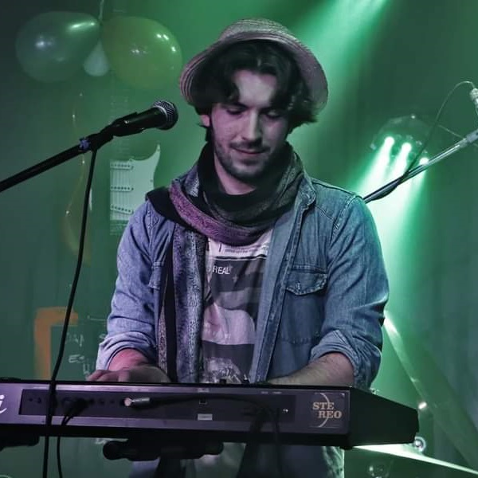
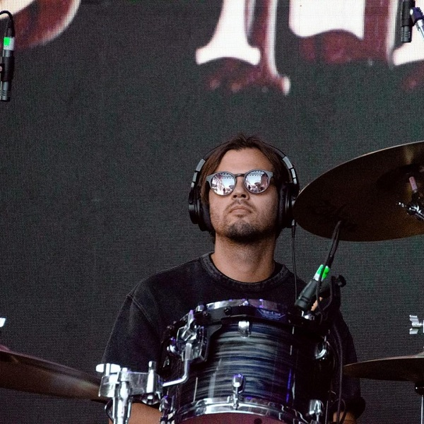

Integrantes
Fer Chavix

Uno de los guitarristas y cantantes de la banda, en cada show nos deleita con algunas de las canciones de su primer album "Ser Mejor", album de genero propio que él bautizó como "pop positivo" cada una de sus canciones esta cargada de sensibilidad y buscan transmitir un único mensaje, tratar de ser mejor
Juan De Gaudio
Tecladista y uno de los cantantes de la banda, con 4 singles publicados Juan deja ver su amor por los teclados Rhodes, los sintetizadores...y el animé?... tambien se puede sentir la influencia de Gustavo Cerati, Luis Alberto Spinetta y Charly Garcia
Lihue Carnovali

Uno de los guitarristas y cantantes de la banda, acaba de lanzar su primer EP el cual lleva su mismo nombre, y no deja de recibir aclamaciones, la musica de Lihue es fresca y moderna, rock indie argentino con toques de RnB e influencia de Gustavo Cerati
Gonza Bozzoni
Baterista y uno de los cantantes de la banda, es quien mas canciones tiene publicadas hasta la fecha con 2 albumes de estudio y uno en vivo, Gonza tiene un marcado estilo Rockero de los 90's que recuerda a Prince, en los shows destaca por su energia y potencia a la hora de tocar